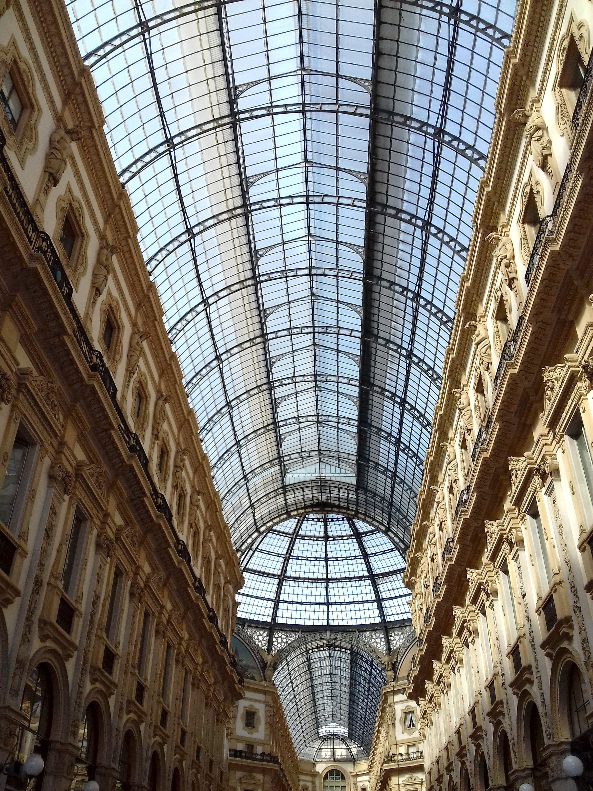

Travel disruption guide
Middle East travel disruption — how to save your holiday
If flights are cancelled, routes are changing, or you’re reconsidering certain destinations due to current events, the goal is simple: keep your vacation days and rebuild a trip with low friction.
Language: EN • ES • FR • DE • NL • PL
General guidance only — always follow official airline/airport advisories for your route.


The 3-step Plan B framework
1) Regain control
Save evidence (emails/screenshots). Check rebooking options and keep reference numbers.
Tel Aviv cancelled
Beirut flight cancelled
2) Pick a connected hub
Choose a city with airports + rail + metro so you can rebuild plans quickly.
3) Keep the itinerary light
Plan 1–2 must‑do items per day. Everything else stays optional until routes stabilize.
Why this works: less friction, fewer “moving parts”, and a much lower chance of losing the whole trip.
Popular searches (quick answers)
Dubai trip cancelled
What to visit instead + why a connected hub city saves your holiday.
15‑minute checklist
Save evidence, rebooking, insurance — keep receipts and reference numbers.
Milan as a base
Simple itineraries + day trips from Centrale (Como, Bergamo, Verona).
Why Milan is a strong alternative
- Transport: airports + Milano Centrale rail hub
- City break value: landmarks, food, shopping, design
- Easy add‑ons: Lake Como, Bergamo, Verona
- Low-stress base: staying near Centrale saves time and energy

FAQ
Middle East flights cancelled — what should I do first?
Save evidence (emails/screenshots), check rebooking options, and review insurance. Then build a Plan B: pick a connected city, secure accommodation, and keep the daily itinerary light until routes stabilize.
What are good alternatives to Dubai or Doha for a city break?
Connected European hubs are often the easiest Plan B. If you want Italy, Milan is particularly practical because of airports + Central Station + metro connections, plus easy day trips.
Where should I stay in Milan for easy airport and train access?
Near Milano Centrale. It reduces friction for airport transfers, trains, and metro routes across the city.
Need a premium Plan B base near Central Station?
Check availability on the official Airbnb listing.
Check availability